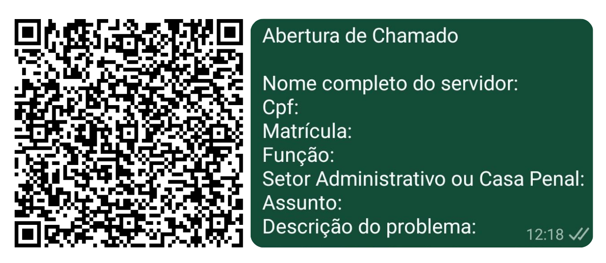

SEAP-PA
SANTARÉM

Abertura de Chamados
 Em caso de problemas nos finais entre em contato com o plantão NTI +55 91 8416-0049
Lembre-se de sempre avisar o tecnico de plantão.
Em caso de problemas nos finais entre em contato com o plantão NTI +55 91 8416-0049
Lembre-se de sempre avisar o tecnico de plantão.
Contato do plantão de Belém
Solicitações Infopen

Após envio da mensagem encaminhe 𑇐 foto ou scanner do formulário preenchido a caneta contendo assisnatura da direção ou coordenação do complexo penitenciário 𑇐 foto do RG ou funcional Lembre-se de sempre avisar o tecnico de sobreaviso, que sempre estará identificado na aba acima da escala.